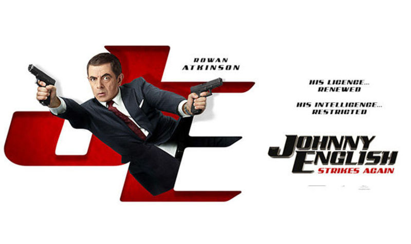

Johnny English Strikes Again | Review by Jithin J Prasad If you are bored and looking for some comedy to make your day, go for Johnny English : Strikes Again I can guarantee that Johnny won’t be disappointing you

Posted By : Jithin J Prasad | Date : 21-10-2018
What you'll do when the world is in danger and the current Secret Agent's are dead? Well you'll just go and recruit a Retired Agent. Yup Johnny English, Strikes again.
The movie begins with a high level Digital Enemy striking against the whole world (centering to the Britain though), and seems like all the pros in the British Intelligence are either gone missing or well dead….! Or at least they cannot be used since their identities’ been exposed by that unknown entity I’ve been talking about. So M17(British Intelligence)’s forced to use their inactive agents whom happens to be Johnny English and 3 other elderly agents(Who are soon be out of the picture ,sorry for the spoiler).
The rest of the story goes on how a pro Analogue player’s going to keep up and catch the Enemy who happens to be a Digital Ghost. The movie’s got a lot of fun's and actions (along with more fun), but too much cliché.
The Pro’s
We could say that Johnny’s been a ghost, yeah he probably didn’t existed in this realm for a long time since we last saw him in 2011 in Johnny English Reborn, that’s right, this is Rowan Atkinson’s first movie since 2011’s Johnny English Reborn, well we surely can enjoy his presence as one of the Guy’s Two most iconic character(s), The other one being Mr.Bean
The cast: Ben Miller’s been English’s ally since….forever, so that part’s good, and Olga Kurylenkodoes makes a perfect spoof of every James Bond girl in fact she’s got the experience from Quantum of Solace, so we’re good at that part too.
The plot’s more relevant to the genre and does mercy to the Franchise.
The Con’s
-
Jake Lacy’s Villain: well I am sure he’s a great actor his Villain is good, but could’ve make him a better villain considering the fact that he’s got some experience being the imbecile of a brother to the Evil Billionaire CEO Claire Wyden(Malin Åkerman) in the Rampage.
Too much cliché, yep you could predict a lot of things, but considering the genre I can’t possibly say that whether this is a Con or not.

If you are bored and looking for some comedy to make your day, go for Johnny English : Strikes Again I can guarantee that Johnny won’t be disappointing you you, My Ratings: 3.25/5.
You can Check the more about the movie from Johnny English Strikes Again